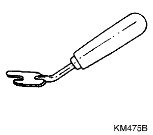
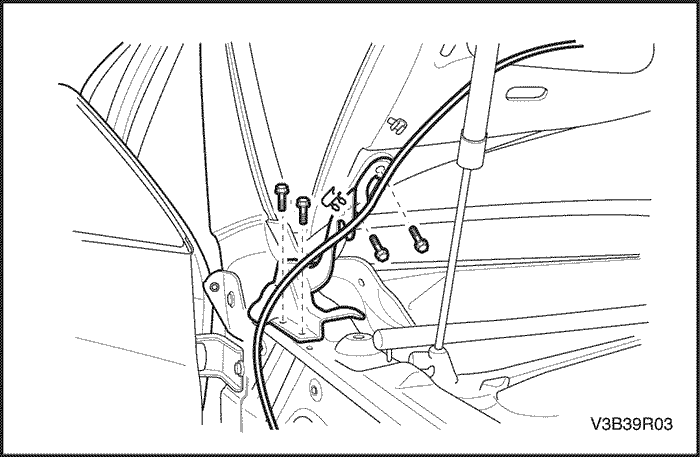
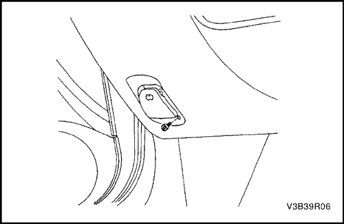
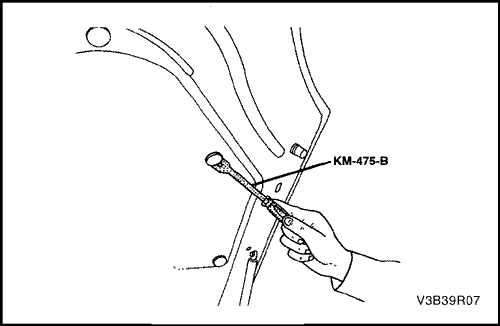
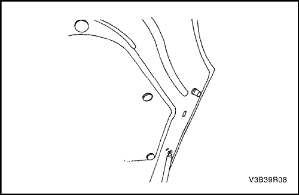
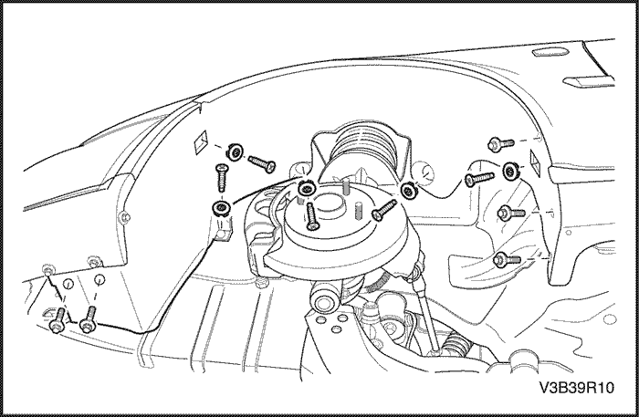

SECCIÓN 9R
EXTREMO DELANTERO DE LA CARROCERÍA
Precaución: Desconecte el cable negativo de la batería antes de desmontar o instalar cualquier unidad eléctrica o cuando exista la posibilidad de que una herramienta o equipo pueda entrar en contacto con bornes eléctricos expuestos. La desconexión de dicho cable ayudará a evitar lesiones personales y daños al vehículo. La llave de contacto debe estar en posición LOCK a menos que se indique lo contrario.
ESPECIFICACIONES
Especificaciones de apriete
| Aplicación | N•m | Árbol de transmisión izquierdo | Articulación |
| Tornillo de la aleta del montante A | 14 | - | 124 |
| Tornillos del guardabarros delantero | 14 | - | 124 |
| Tornillos de la chapa guardabarros del paso de rueda delantera | 2 | - | 18 |
| Tornillos de la bisagra | 24 | 18 | - |
| Tornillos de sujeción de la bisagra al capó | 24 | 18 | - |
| Tornillo del cierre del capó | 12 | - | 106 |
| Tornillo del tirador de apertura del capó | 2,5 | - | 22 |
| Tornillos inferiores de la aleta guardabarros | 14 | - | 124 |
| tornillos de la rejilla del radiador | 2 | - | 18 |
| Tornillos superiores de la aleta guardabarros | 14 | - | 124 |
| Tornillo del depósito del lavaparabrisas | 9 | - | 80 |
HERRAMIENTAS ESPECIALES
Tabla de herramientas especiales

 
| KM-475-B Extractor de elementos de acabado |
MANTENIMIENTO Y REPARACIÓN
servicio con vehículo en marcha
Lubricación
Las bisagras del capó y los mecanismos de cierre requieren una lubricación periódica para conseguir un funcionamiento adecuado. Consulte la Sección
0B, Información general para conocer los tipos específicos de lubricantes y los intervalos de lubricación.
Ajustadores
Aviso: Metales distintos en contacto directo pueden corroerse rápidamente. Asegúrese de utilizar los elementos de sujeción correctos para evitar una corrosión prematura.
En los modelos actuales se utilizan muchos componentes de aluminio. El aluminio en contacto con el acero puede oxidarse rápidamente si no se protege con aislantes o acabados especiales.
Los elementos de sujeción utilizados disponen de un acabado especial que les proporciona una protección adecuada contra la corrosión. Estos dispositivos de sujeción especiales tienen un color diferente de modo que se distingan fácilmente de los elementos de sujeción de métrica estándar, los cuales poseen un color azul intermedio.
Cuando sustituya un elemento de sujeción, evite la sustitución de otros elementos similares en el mismo lugar.
Materiales anticorrosivos
Con el fin de proporcionar una resistencia a la oxidación, se han aplicado ciertos materiales anticorrosivos a las superficies interiores de la mayoría de los paneles metálicos. Cuando se efectúe el mantenimiento de estos paneles, recúbralos con un material anticorrosión del tipo de servicio si alguno de ellos ha sufrido algún deterioro.
Sellado de extremo delantero
Todos aquellos puntos en los que puedan producirse infiltraciones de agua se sellan durante el proceso de fabricación con sellante de larga duración y alta calidad. Si fuera necesario sellar de nuevo zonas específicas, utilice un sellante de alta calidad y de consistencia intermedia que conserve sus características de flexibilidad después del proceso de secado y que pueda pintarse si fuera preciso.

Rejilla de ventilación del capó
(Indicado para conducción a izquierdas, conducción a derechas similar)
Procedimiento de desmontaje
- Levante el capó.
- Desmonte los brazos limpiaparabrisas. Consulte la sección 9D, Sistema limpia/lavaparabrisas.
- Desmonte el burlete.
- Quite los clips de retención de la rejilla de ventilación del capó y desmonte la rejilla.
procedimiento de montaje
- Monte la rejilla de ventilación del capó con sus clips de retención.
- Monte el burlete.
- Baje el capó.

Capó
Procedimiento de desmontaje
Importante: Coloque las tapas protectoras sobre los guardabarros y el parabrisas para evitar que se dañen la pintura, el cristal o las molduras al montar y desmontar el capó.
- Levante y sujete el capó.
- Marque la posición de la bisagra en el capó para alinearla al montarlo nuevamente.
- Retire los manguitos del lavaparabrisas del capó.
- Retire los montantes del capó. Consulte el apartado "Montantes del capó" de esta sección.
- Quite los tornillos que sujetan el capó a las dos bisagras.
- Con la ayuda de otro técnico, retire el capó de las bisagras.
procedimiento de montaje
- Con la ayuda de otro técnico, coloque el capó en el lugar marcado durante el desmontaje.
Aviso: Metales distintos en contacto directo pueden corroerse rápidamente. Asegúrese de utilizar los elementos de sujeción correctos para evitar una corrosión prematura.
- Coloque los dos tornillos que sujetan el capó a cada bisagra.
Apretar
Apriete los tornillos de sujeción de la bisagra al capó hasta 20 N•m (15 lb-pie).
- Instale los montantes del capó. Consulte el apartado "Montantes del capó" de esta sección.
- Compruebe si el capó está bien alineado.
- Instale los manguitos del lavaparabrisas en el capó.

Bisagras del capó
Procedimiento de desmontaje
- Desmonte el capó. Consulte el apartado "Capó" de esta sección.
- Desmonte el guardabarros. Consulte el apartado "Aleta guardabarros" de esta sección.
- Quite los tornillos y la bisagra.
procedimiento de montaje
Aviso: Metales distintos en contacto directo pueden corroerse rápidamente. Asegúrese de utilizar los elementos de sujeción correctos para evitar una corrosión prematura.
- Monte la bisagra con sus tornillos.
Apretar
Apriete los tornillos de la bisagra hasta 20 N•m (15 lb-pie).
- Monte la aleta guardabarros. Consulte el apartado "Aleta guardabarros" de esta sección.
- Monte el capó. Consulte el apartado "Capó" de esta sección.
Montantes del capó
Procedimiento de desmontaje
- Levante y sujete el capó.
- Retire los clips de retención y el montante del capó.
procedimiento de montaje
- Coloque los clips de retención e instale el montante del capó.
- Cierre el capó.

Cerradura auxiliar del capó
Procedimiento de desmontaje
- Abra el capó.
- Marque la posición del cierre del capó en el soporte del radiador para facilitar su alineación al montarlo.
- Quite los tornillos y desmonte el cierre del capó.
- Desconecte el cable de apertura del cierre del capó.
procedimiento de montaje
Aviso: Metales distintos en contacto directo pueden corroerse rápidamente. Asegúrese de utilizar los elementos de sujeción correctos para evitar una corrosión prematura.
- Conecte el cable de apertura al cierre del capó.
- Coloque el cierre del capó en el sitio marcado al desmontarlo
- Monte el cierre del capó con sus tornillos.
Apretar
Apriete los tornillos del cierre del capó hasta 12 N•m (106 lb-pulg.).
- Cierre el capó.

Cable de apertura de la cerradura del capó
(Indicado para conducción a izquierdas, conducción a derechas similar)
Procedimiento de desmontaje
- Quite el tornillo del tirador de apertura del capó.
- Desmonte la barra de protección de rodillas y el tirador de apertura del capó.
- Desconecte el cable del tirador de apertura del capó.
- Desmonte el cierre secundario del capó. Consulte el apartado "Cierre secundario del capó" de esta sección.
- Retire el cable del compartimento motor.
procedimiento de montaje
Aviso: Metales distintos en contacto directo pueden corroerse rápidamente. Asegúrese de utilizar los elementos de sujeción correctos para evitar una corrosión prematura.
- Coloque el cable a través del compartimento motor.
- Monte el cierre secundario del capó. Consulte el apartado "Cierre secundario del capó" de esta sección.
- Conecte el cable al tirador de apertura del capó.
- Monte el tirador de apertura del capó y la barra de protección de rodillas con su tornillo.
Apretar
Apriete el tornillo del tirador de apertura del capó hasta 2,5 N•m (22 lb-pulg.).

AISLAMIENTO DEL CAPÓ
Herramientas necesarias
Extractor de elementos de acabado KM-475-B
Procedimiento de desmontaje
- Abra el capó.
- Retire el manguito del lavaparabrisas del capó.
- Use el extractor de elementos de acabado KM-475-B para quitar los clips de retención.
- Desmonte el aislamiento del capó.

procedimiento de montaje
- Monte el aislamiento del capó con los clips de retención.
- Instale el manguito del lavaparabrisas en el capó.
- Cierre el capó.
Rejilla del radiador
Procedimiento de desmontaje
- Desmonte el parachoques delantero. Consulte la Sección 9O, "Parachoques y tableros".
- Quite los tornillos y desmonte la rejilla del radiador.
procedimiento de montaje
- Monte la rejilla del radiador con sus tornillos.
Apretar
Apriete los tornillos de la rejilla del radiador hasta 2 N•m (18 lb-pulg.).
- Monte el parachoques delantero. Consulte la Sección 9O, "Parachoques y tableros".

Guardasalpicaduras de hueco de rueda delantera
Procedimiento de desmontaje
- Levante y apoye el vehículo adecuadamente.
- Desmonte la rueda delantera. Consulte la Sección 2E, Neumáticos y ruedas.
- Desmonte el guardabarros delantero. Consulte la sección 9M, Guarnecido exterior.
- Quite los tornillos y desmonte la chapa guardabarros del paso de rueda delantera.
procedimiento de montaje
- Coloque los tornillos y monte la chapa guardabarros del paso de rueda delantera.
Apretar
Apriete los tornillos de la chapa guardabarros del paso de rueda delantera hasta 2 N•m (18 lb-pulg.).
- Monte el guardabarros delantero. Consulte la sección 9M, Guarnecido exterior.
- Monte la rueda delantera. Consulte la Sección 2E, Neumáticos y ruedas.
- Baje el vehículo.

Guardabarros
Procedimiento de desmontaje
- Desmonte la chapa guardabarros del paso de rueda delantera. Consulte el apartado "Chapa guardabarros del paso de rueda delantera" de esta sección.
- Desmonte el conjunto del faro. Consulte la Sección 9B, Sistemas de alumbrado.
- Desmonte el parachoques delantero. Consulte la Sección 9O, "Parachoques y tableros".
- Desmonte la moldura del panel de estribera. Consulte la sección 9M, Guarnecido exterior.
- Quite los tornillos de la aleta guardabarros por detrás del tablero delantero.
- Quite los tornillos de la base de la aleta guardabarros.

- Abra la puerta delantera y quite el tornillo de la base del montante A.
- Aparte el burlete de la rejilla de ventilación del capó.

- Quite los tornillos superiores de la aleta guardabarros y desmonte la aleta.
procedimiento de montaje
Aviso: Metales distintos en contacto directo pueden corroerse rápidamente. Asegúrese de utilizar los elementos de sujeción correctos para evitar una corrosión prematura.
- Monte la aleta guardabarros con sus tornillos superiores.
Apretar
Apriete los tornillos superiores de la aleta guardabarros hasta 14 N•m (124 lb-pulg.).
- Vuelva a colocar el burlete de la rejilla de ventilación del capó en su posición original.
- Coloque el tornillo en la base del montante A.
Apretar
Apriete el tornillo de la aleta del montante A hasta 14 N•m (124 lb-pulg.).
- Coloque los tornillos en la base de la aleta guardabarros.
Apretar
Apriete los tornillos inferiores de la aleta guardabarros hasta 14 N•m (124 lb-pulg.).
- Coloque los tornillos de la aleta guardabarros delantera por detrás del tablero delantero.
Apretar
Apriete los tornillos de la aleta guardabarros delantera hasta 14 N•m (124 lb-pulg.).
- Monte la moldura del panel de estribera. Consulte la sección 9M, Guarnecido exterior.
- Monte el parachoques delantero. Consulte la Sección 9O, "Parachoques y tableros".
- Monte el conjunto del faro. Consulte la Sección 9B, Sistemas de alumbrado.
- Monte la chapa guardabarros del paso de rueda delantera. Consulte el apartado "Chapa guardabarros del paso de rueda delantera" de esta sección.
DESCRIPCIÓN GENERAL Y FUNCIONAMIENTO DEL SISTEMA
Extremo delantero de la carrocería
Este vehículo tiene una carrocería monocasco con un bastidor que sirve de soporte al motor y a la caja de cambios. Los paneles de las aletas guardabarros y el soporte del radiador son parte integral de la carrocería.